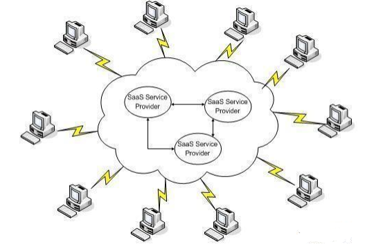
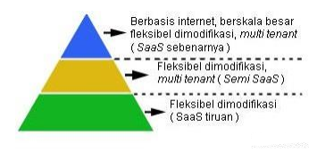

Software as a service merupakan evolusi lanjutan dari konsep ASP ( Application Service Provider). Software as service adalah istilah terhadap software atau aplikasi tertentu berbasis internet yang ditawarkan oleh provider kepada pengguna. Dalam hal ini, provider sebagai pemegang license atas software tersebut hanya memberikan service atau layanan kepada pengguna untuk menggunakannya sesuai kebutuhan pengguna dengan demikian menghilangkan kerumitan dalam hal pemeliharaan software, operasional dan support. License, maintenance, support, tingkat kenyamanan dan keamanan atas software tersebut sepenuhnya menjadi tanggung jawab dari provider. Kata-kata Software merujuk kepada perangkat lunak suatu sistem, dimana perangkat lunak pada umumnya memiliki beragam karakteristik. Tidak semua perangkat lunak yang beredar di pasaran dapat dikategorikan sebagai SaaS, ada beberapa karakteristik yang harus terpenuhi :
Software as service menawarkan beberapa keuntungan kepada pengguna dibanding dengan model aplikasi desktop:
Gambar dibawah ini menjelaskan ketika provider mempublikasikan suatu layanan SaaS di internet dan satu atau beberapa pengguna saling menggunakannya secara bersama-sama atau on demand di dalam internet.

On Demand di dalam internet
Implementasi cloud computing dapat diterapkan pada jaringan yang bersifat public atau jaringan yang bersifat private. Jaringan yang bersifat public adalah suatu jaringan yang dapat diakses dan digunakan
secara umum oleh setiap orang selama orang tersebut terkoneksi dengan internet sedangkan jaringan yang bersifat private adalah suatu jaringan yang hanya dapat diakses dan digunakan oleh orang-orang tertentu meskipun melalui koneksi internet.
Ketika cloud computing diimplementasikan ke dalam jaringan public, maka seluruh sumber daya atau resources dari aplikasi sepenuhnya berada internet. Layanan SaaS yang bersifat public sering kita jumpai dalam bentuk aplikasi web atau web services.
Ketika provider meletakkan seluruh sumber daya atau resources dari aplkasi ke dalam internet tetapi hanya beberapa orang yang dapat menggunakannya maka layanan SaaS tersebut bersifat private. SaaS yang ditawarkan provider kepada pengguna baik
melalui jaringan public maupun jaringan private pada dasarnya mempunyai satu karakteristik yang sama yaitu mudah diakses dan berskala luas ( upgrade aplikasi, modifikasi aplikasi disesuaikan dengan kebutuhan dan keinginan pengguna).
Berbagai SaaS yang dibuat oleh provider sering disebut dalamberbagai versi yaitu versi berbasis web, on demand dan sebagainya. Apapun versi yang dibuat oleh provider, yang diperlukan oleh pengguna adalah koneksi internet untuk dapat menggunakan SaaS tersebut.
Metodologi pengembangan dari SaaS memiliki kesamaan dengan pengembangan software desktop baik dari sisi kemampuan aplikasi diakses dalam skala besar, tingkat keamanan dan aplikasi yang nyaman digunakan oleh pengguna.
Beberapa faktor keberhasilan dalam implementasi dan pengembangan SaaS yaitu:
Berdasarkan ketiga faktor keberhasilan tersebut dan membandingkan berbagai aplikasi berbasis SaaS yang ditawarkan oleh provider, maka kita dapat mengelompokkan berdasarkan kategori seperti yang terdapat pada gambar dibawah ini.

Pengelompokkan kategori
Secara arsitektur, SaaS memiliki kesamaan dengan SOA ( Service Oriented Architecture ) yang dimiliki oleh software desktop, SaaS memiliki dua lapisan tambahan yang tidak dimiliki oleh software desktop. Perbedaan tersebut adalah: